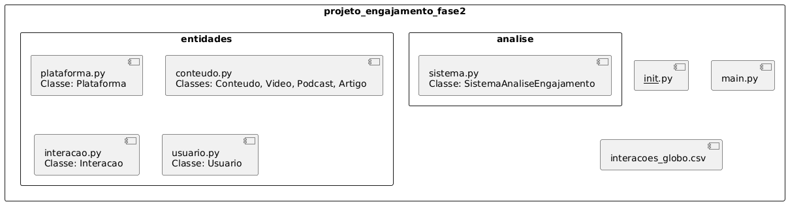
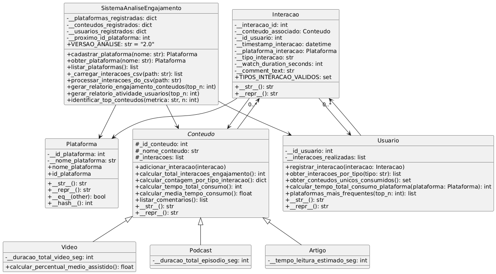

Sejam bem-vindos à apresentação do nosso Projeto Unificado - Fase 2. Aplicamos princípios e técnicas de POO em Python para criar um sistema robusto, modular e extensível que modela, processa e analisa interações de usuários nas plataformas Globo (G1 e Globoplay).
Organização em pacotes e módulos para promover modularidade e manutenibilidade:
projeto_engajamento_fase2/
├── main.py # Script principal de execução
├── interacoes_globo.csv # Arquivo com dados brutos de interações
├── entidades/ # Subpacote com entidades do domínio
│ ├── __init__.py
│ ├── plataforma.py # Classe Plataforma
│ ├── conteudo.py # Classes Conteudo, Video, Podcast, Artigo
│ ├── interacao.py # Classe Interacao
│ └── usuario.py # Classe Usuario
├── analise/ # Subpacote com sistema de análise
│ ├── __init__.py
│ └── sistema.py # Classe Sistema Analise Engajamento
└── README.md
Visão geral da divisão dos módulos e pacotes do projeto:
Representação das principais classes, atributos e relacionamentos:
Aplicamos encapsulamento, herança e polimorfismo para criar um modelo coeso e representativo:
Modela uma plataforma de mídia com atributos e métodos para manipulação de dados:
_id_plataforma e _nome_plataforma são privados.nome_plataforma é controlado por @property e @nome_plataforma.setter.ValueError se a condição não for atendida.
@nome_plataforma.setter
def nome_plataforma(self, nome: str):
"""Define ou atualiza o nome da plataforma, com validação."""
if not isinstance(nome, str) or not nome.strip():
raise ValueError("O nome da plataforma não pode ser nulo ou vazio.")
self._nome_plataforma = nome.strip()
__str__: Retorna o nome da plataforma, facilitando a exibição.__eq__ e __hash__: Permitem que objetos Plataforma sejam comparados (ignorando maiúsculas/minúsculas) e utilizados de forma eficiente em coleções como set e chaves de dicionários.
# extraído de plataforma.py
def __eq__(self, other) -> bool:
"""Verifica se duas instâncias de Plataforma são iguais."""
if not isinstance(other, Plataforma):
return NotImplemented
return self.nome_plataforma.lower() == other.nome_plataforma.lower()
def __hash__(self) -> int:
"""Retorna o hash do objeto, baseado no nome da plataforma."""
return hash(self.nome_plataforma.lower())
A classe BaseConteudo representa um item de conteúdo consumível.
Conteudo serve como classe mãe para Video, Podcast e Artigo.adicionar_interacao e calcular_total_interacoes_engajamento, mas também adicionam atributos próprios (_duracao_total_video_seg, etc.) e podem sobrescrever métodos.calcular_percentual_medio_assistido na classe Video, específico para esse tipo de conteúdo.calcular_total_interacoes_engajamento(): Soma interações valiosas como 'like', 'share' e 'comment'.calcular_contagem_por_tipo_interacao(): Retorna um dicionário com a contagem de cada tipo de interação.calcular_media_tempo_consumo(): Calcula o tempo médio que os usuários passaram consumindo aquele conteúdo.listar_comentarios(): Agrega todos os comentários feitos em um conteúdo.
# extraído de Conteudo.py
def calcular_media_tempo_consumo(self):
"""Calcula a média do tempo de consumo maior que zero"""
tempos = [getattr(inter, 'watch_duration_seconds', 0) or 0 for inter in
self._interacoes if getattr(inter, 'watch_duration_seconds', 0)]
if tempos:
return sum(tempos) / len(tempos)
return 0
Modela uma única ação de um usuário em um conteúdo.
__init__:__init__) é responsável por receber uma linha do CSV e transformá-la em um objeto Interacao válido.tipo_interacao está na lista de tipos válidos (TIPOS_INTERACAO_VALIDOS) e garantir que watch_duration_seconds não seja negativo.
# extraído de interacao.py
class Interacao:
def __init__(self, conteudo_associado: Conteudo, plataforma_interacao: Plataforma, linha_csv: list) -> None:
TIPOS_INTERACAO_VALIDOS = ['view_start', 'like', 'share', 'comment']
# ... (atribuição de outros atributos)
if linha_csv[5] in TIPOS_INTERACAO_VALIDOS:
self._tipo_interacao = linha_csv[5]
else:
self._tipo_interacao = "Interação inválida"
Agrega todas as interações realizadas por um único usuário.
registrar_interacao(): Adiciona uma nova interação à lista de interações do usuário.calcular_tempo_total_consumo_plataforma(): Calcula o tempo de consumo de um usuário em uma plataforma específica.plataformas_mais_frequentes(): Retorna uma lista com as plataformas mais utilizadas pelo usuário, demonstrando a utilidade dos métodos __eq__ e __hash__ da classe Plataforma.É a classe orquestradora do sistema. Ela gerencia as coleções de plataformas, conteúdos e usuários, funcionando como um "CRUD" em memória.
processar_interacoes_do_csv lê o arquivo interacoes_globo.csv e, para cada linha, instancia (ou obtém) os objetos Plataforma, Conteudo, Usuario e Interacao correspondentes, vinculando-os corretamente.
gerar_relatorio_engajamento_conteudos e gerar_relatorio_atividade_usuarios iteram sobre os dicionários de objetos registrados (_conteudos_registrados, _usuarios_registrados) e utilizam os métodos de cálculo de cada objeto para exibir as métricas, delegando a responsabilidade do cálculo para as próprias entidades.
identificar_top_conteudos permite encontrar os conteúdos mais populares com base em uma métrica específica, como 'tempo_total_consumo'.
Para executar, basta clonar o repositório e rodar python main.py, garantindo que o interacoes_globo.csv esteja presente.
Este projeto foi uma imersão profunda e prática nos pilares da Programação Orientada a Objetos. Os principais aprendizados foram:
entidades, analise) tornou o sistema muito mais organizado e escalável.
properties com validações no setter e a validação de dados nos construtores (__init__) se mostraram fundamentais para garantir a confiabilidade do nosso sistema.
__str__, __eq__, __hash__) para criar objetos que se comportam de maneira intuitiva e se integram perfeitamente com as estruturas de dados do Python.
Qualquer dúvida, estamos à disposição.